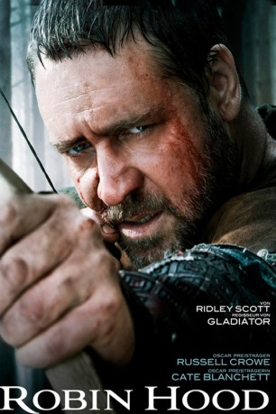

#164 Robin Hood
 
 IMDB-Wertung: 6.7 / 10
IMDB-Wertung: 6.7 / 10  Metascore: 53
Metascore: 53 
Nach dem Tode König Richards lässt der begnadete Bogenschütze Robin den Krieg gegen die Franzosen hinter sich und kehrt zurück nach England, in ein durch Korruption und einen brutalen Sheriff gebeuteltes Nottingham. Schnell verliebt er sich in die willensstarke Witwe Lady Marion, die anfangs allerdings überaus skeptisch ist, was ihn und seine Beweggründe angeht. Nicht zuletzt um ihre Hand zu gewinnen, versammelt er eine Truppe Gleichgesinnter und gemeinsam mit seinen Männern macht er dem Sheriff einen Strich durch seine gierige Rechnung und macht jagt auf die Reichen, wobei er die Beute an die Armen verteilt. Doch seine von Jahrzehnten des Krieges geschwächte Heimat hält noch eine weitaus größere Aufgabe für Robin parat. So machen sich ausgerechnet dieser unwahrscheinlichste aller Helden und seine Verbündeten auf, einen blutigen Bürgerkrieg zu verhindern und England wieder zu neuem Ruhm und Glanz zu verhelfen.
Jahr: 2010
Dauer: 140 Minuten
FSK: 12
Land: USA Studio: Universal PicturesTonspuren: DTS - ,
Untertitel:
Auflösung: 1080p (1920×800) Größe: 14848 MB
Genre: Action, Abenteuer, Drama, Geschichte, Liebe
Regisseur:  Ridley Scott
Ridley Scott
Drehbuch: Brian Helgeland, Brian Helgeland, Ethan Reiff, Cyrus Voris
Soundtrack: Marc Streitenfeld
Darsteller:
 Russell Crowe als Robin Longstride
Russell Crowe als Robin Longstride Cate Blanchett als Marion Loxley
Cate Blanchett als Marion Loxley Max von Sydow als Sir Walter Loxley
Max von Sydow als Sir Walter Loxley William Hurt als William Marshal
William Hurt als William Marshal Mark Strong als Godfrey
Mark Strong als Godfrey Oscar Isaac als Prince John
Oscar Isaac als Prince John Danny Huston als King Richard the Lionheart
Danny Huston als King Richard the Lionheart Eileen Atkins als Eleanor of Aquitaine
Eileen Atkins als Eleanor of Aquitaine Mark Addy als Friar Tuck
Mark Addy als Friar Tuck Matthew Macfadyen als Sheriff of Nottingham
Matthew Macfadyen als Sheriff of Nottingham Kevin Durand als Little John
Kevin Durand als Little John Scott Grimes als Will Scarlet
Scott Grimes als Will Scarlet- Alan Doyle als Allan A'Dayle
 Douglas Hodge als Sir Robert Loxley
Douglas Hodge als Sir Robert Loxley Léa Seydoux als Isabella of Angoulême
Léa Seydoux als Isabella of Angoulême- Jonathan Zaccaï als King Philip of France
 Robert Pugh als Baron Baldwin
Robert Pugh als Baron Baldwin Gerard McSorley als Baron Fitzrobert
Gerard McSorley als Baron Fitzrobert- Velibor Topic als Belvedere
 Simon McBurney als Father Tancred
Simon McBurney als Father Tancred Thomas Arnold als Captain of the Royal Barge
Thomas Arnold als Captain of the Royal Barge Mark Lewis Jones als Stone Mason Longstride
Mark Lewis Jones als Stone Mason Longstride Bronson Webb als Jimoen
Bronson Webb als Jimoen Denis Ménochet als Adhemar
Denis Ménochet als Adhemar Luke Evans als Sheriff's Thug
Luke Evans als Sheriff's Thug- Mark Ryder als Baron Baldwin's Grandson
 Ned Dennehy als Sentinel
Ned Dennehy als Sentinel- Stuart Martin als Messenger
- Jessica Raine als Princess Isabel of Gloucester
 Steve Evets als Ragged Messenger
Steve Evets als Ragged Messenger- Arthur Darvill als Groom
 Giannina Facio-Scott als Lady-in-Waiting
Giannina Facio-Scott als Lady-in-Waiting- Nicky Bell als Soldier Two
- Andrea Ware als Little John's Wench
 Ralph Ineson als Northerner
Ralph Ineson als Northerner Jake Curran als Distinctive Man
Jake Curran als Distinctive Man- Tom Blyth als Feral Child
 Lasco Atkins als Castle Worker , uncredited
Lasco Atkins als Castle Worker , uncredited Jason Beeston als French Soldier , uncredited
Jason Beeston als French Soldier , uncredited- Samara Couri als Villager , uncredited
- Alex Coury als Soldier , uncredited
- Sam Fink als French Legionnaire , uncredited
- Jane Hardcastle als Wench Dancing , uncredited
 Lee Nicholas Harris als Archer , uncredited
Lee Nicholas Harris als Archer , uncredited- Tim Howard als French Soldier , uncredited
- Kerry Ingram als Village Child , uncredited
- Michael Koltes als Tax Collector , uncredited
- Jo Marriott als Friar Tuck's Wench , uncredited
 João Costa Menezes als Archer , uncredited
João Costa Menezes als Archer , uncredited- Sarah Jane O'Neill als Nottingham Villager / Londoner , uncredited
Datei: X:\2010(N-Z)\Robin Hood (2010, FSK12, 1920x800).mkv seit 14.02.2015
Festplatte: HD 2010(G-Z)-2011(A-F)
 Es gibt insgesamt 115 Filme in der Gruppe '2010(N-Z)'
Es gibt insgesamt 115 Filme in der Gruppe '2010(N-Z)'